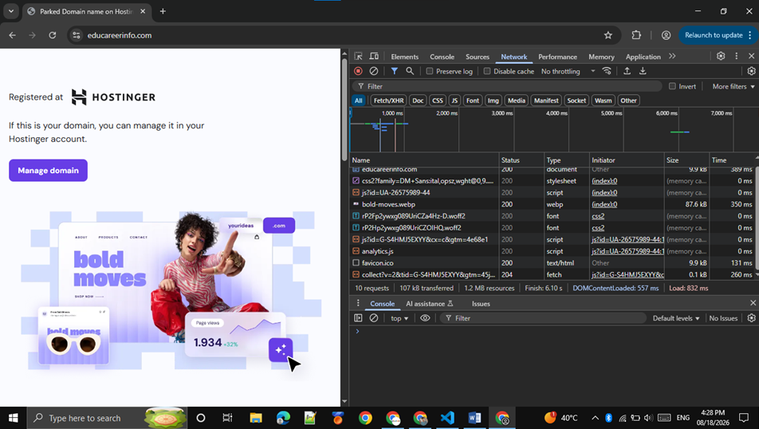
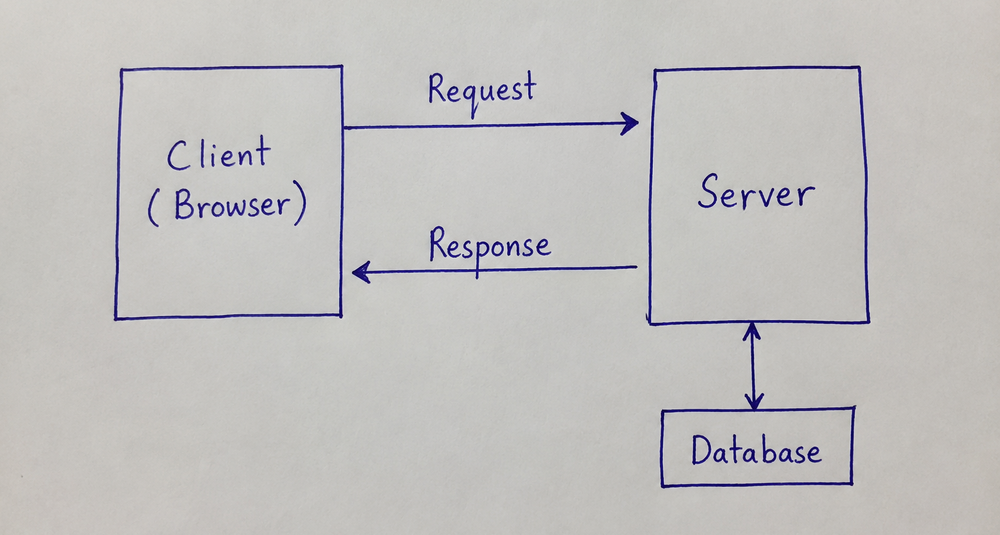
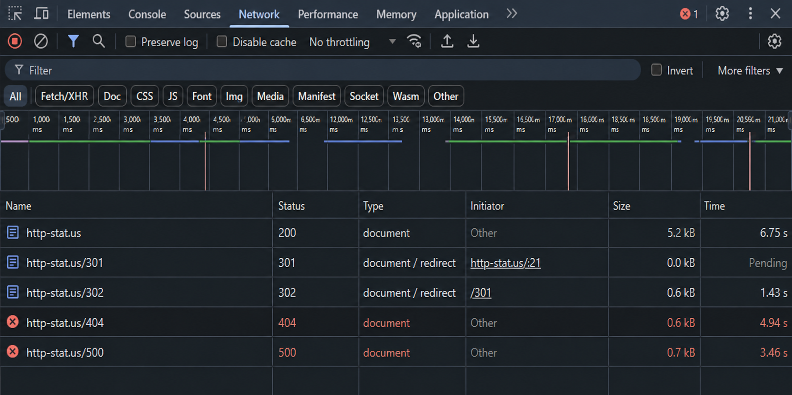
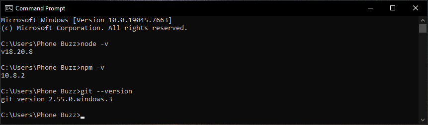
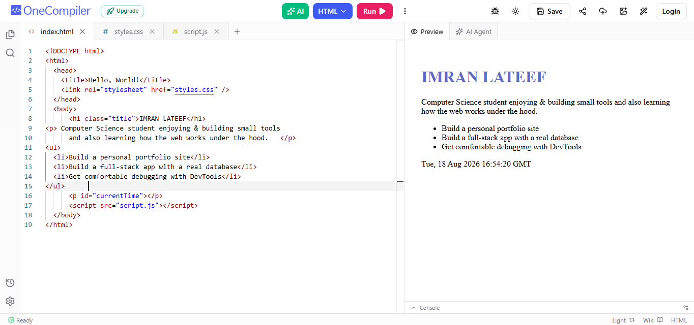
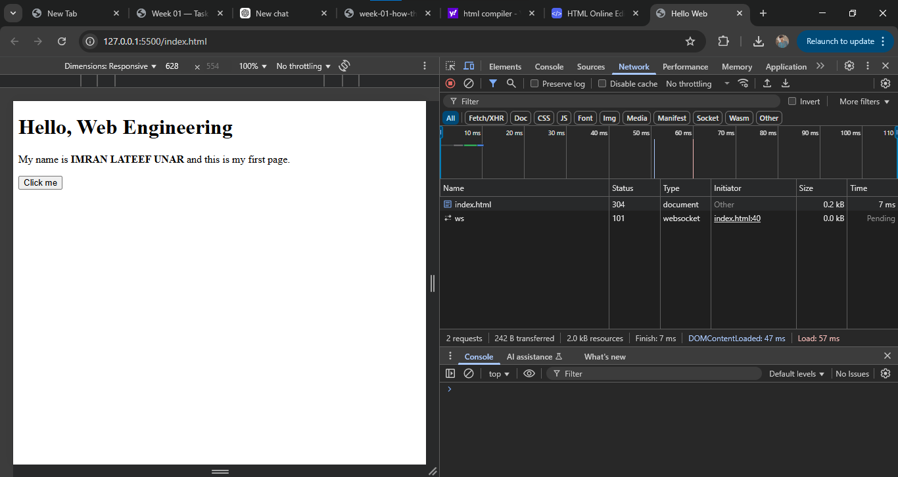
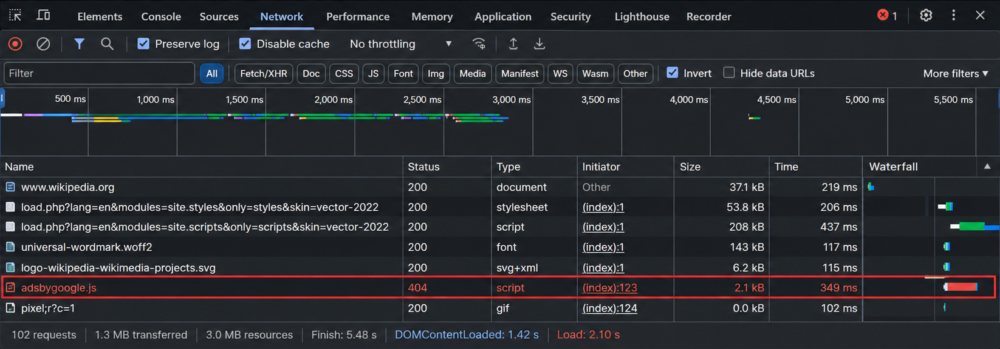

Task Sheet — with Solutions
Warm-up
5 minExplore the Network tab on a familiar site
F12. Click the Network tab and reload. Write down:
- How many requests appeared?
- Can you find one that says
200?
10 requests appeared and All requests appeared with 200 status except last that is 204.

Class Activity A
5 min · pen & paperDraw the client–server diagram
- Draw 2 boxes: left = Client (Browser), right = Server.
- Draw an arrow Client → Server labelled Request.
- Draw an arrow Server → Client labelled Response.
- (Optional) Draw a small box under Server labelled Database.

Class Activity B
8 min · URL teardownBreak a real URL into its six parts
- Find any URL on the internet and copy the complete address.
- Split it into: Protocol, Host, Port (if any), Path, Query, Fragment.
- Make sure your URL contains all six parts — use a Live Server URL if needed to complete the set.
- Write each part separately.
- Change the product or search term, and check which part of the URL changes.
URL: https://educareerinfo.free.nf:443/quizes/aror.php?quiz=5&cat=noncivil#ad
| Part | Value |
|---|---|
| Protocol | https |
| Host | educareerinfo.free.nf |
| Port | 443 |
| Path | /quizes/aror.php |
| Query | ?quiz=5&cat=noncivil |
| Fragment | #ad |
Changing the quiz number (e.g. quiz=1 → quiz=7) and Changing the quiz catagory (e.g. cat=noncivil → cat=civil) changes only the path. Changing the sort option changes only the query. Neither changes the host or protocol.
Class Activity C
5 min · HTTP Status Code ActivityCapture one status code from each family
- 2xx Almost any successful page load — the main HTML document request is usually
200 OK. - 3xx Open
https://http-stat.us/301orhttps://http-stat.us/302, or visit a website that redirects (such as a shortened URL), and look for301 Moved Permanentlyor302 Found. - 4xx Visit any non-existent page on a real site, e.g.
example.com/this-page-does-not-exist→404 Not Found. - 5xx Harder to find on demand — some public "status code testing" endpoints intentionally return one (e.g. an endpoint documented to return 500), or note it the next time a site is genuinely down.

Class Activity D
15 min · Tools Installation & SetupInstall and verify your toolchain
- Install Node.js, npm, and Git if not already installed.
- Check versions:
node -v,npm -v,git --version. - Make sure Live Server is installed in your code editor and working.
- Make sure Prettier Formatter is installed and working — test by writing messy code, saving, and confirming it auto-formats.

First Page
Reference buildBuild hello-web/index.html
hello-web with a file index.html containing a valid HTML5 skeleton, your name, a bio paragraph, and a button that alerts on click.<!DOCTYPE html>
<html lang="en">
<head>
<meta charset="UTF-8" />
<meta name="viewport" content="width=device-width, initial-scale=1.0" />
<title>Hello Web</title>
</head>
<body>
<h1>Hello, Web Engineering</h1>
<p>My name is <strong> IMRAN LATEEF UNAR </strong> and this is my first page.</p>
<button id="greet">Click me</button>
<script>
document.getElementById("greet").addEventListener("click", () => {
alert("The button works.");
});
</script>
</body>
</html>
Open with Live Server so the address bar reads http://127.0.0.1:5500/hello-web/index.html — never file://.
Class Activity E
12 min · Personalise and ServeMake the page yours
- Type the skeleton yourself (do not paste).
- Replace "Your Name" with your real name.
- Add a short bio paragraph.
- Add an unordered list of three things you want to build this semester.
- Serve with Live Server and click the button.
http://… (not file://), your name is on the page, and the button alerts.
Class Activity F
10 min · Three DevTools DrillsNetwork, Console, Elements — one drill each
- Network: reload. Find
index.html. Confirm status200. Screenshot it. - Console: type
document.titleand press Enter. Check the result. - Elements: double-click the
<h1>text and change it. Reload — notice the file did not keep the DevTools edit.
1. Network: the index.html row shows status 200, confirming the server (Live Server) sent the file successfully.
2. Console: typing document.title returns "Hello Web" — the exact text inside your <title> tag.
3. Elements: the heading change disappears on reload because Elements only edits the browser's live, in-memory DOM — it never writes back to the actual index.html file on disk.

Homework — Task 1
Prove the toolchainPaste exact terminal output
node -v, npm -v, git --version.Homework — Task 2
Network detectiveInvestigate a real site's Network panel
- How many requests did the page make?
- What is the largest file, and what type is it (JS, image, CSS…)?
- Find one request that is not 200. What status is it, and what do you think happened?
- Request count: 102 requests shown at the bottom status bar of the Network panel.
- Largest file: The largest file is load.php?lang=en&modules=site.styles&only=styles&skin=vector-2022, type: script (JavaScript), size: 208 kB.
- Non-200 request:
Status: 404 (Not Found).This request appears to be for anadsbygoogle.jsscript that does not exist or could not be found at the requested location, so the server returned404 Not Found.
